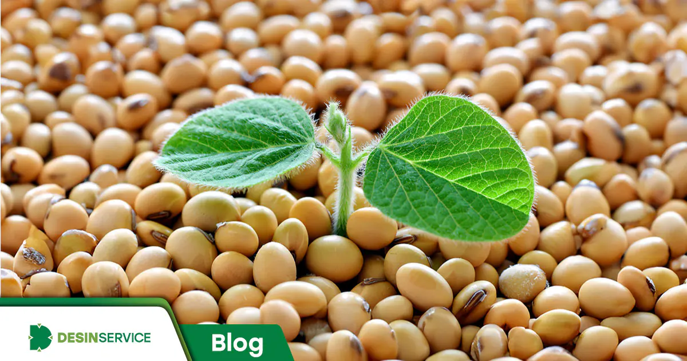
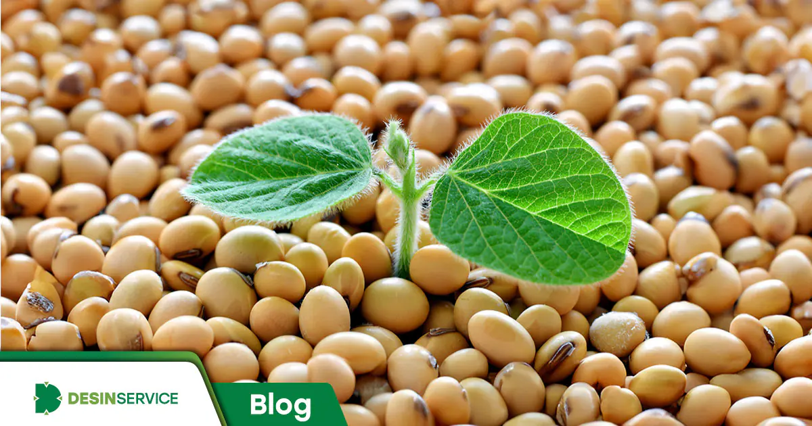

soja
a soja e uma leguminosa pertecenter a familia das fabaceae conhecida cientificamente como glycine max originaria da asia e amplamente cultivada em diversas partes do mundo devido ao seu valor nutricional e versatilidade. A soja é uma fonte rica de proteina vegetal e contem todos os aminoacidos essenciais, alem de ser rica em gorduras saudaveis, fibras, vitaminas (como a vitamina B e K) e minerais (como ferro e calcio). A soja é ultilizada de varias formas na alimentacao humana e animal.
Alem de sua importancia na alimentacao, a soja tambem é ultilizada na industria para a producao de oleo de soja, biodiesel, plasticos, tintas, entre outros produtos. No contexto agricola a soja é uma cultura significativa pois fixa nitrogenio no solo, melhorando a fertilidade do solo e beneficiando as rotaçoes de cultura.